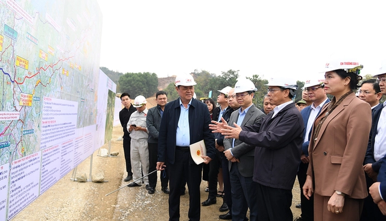
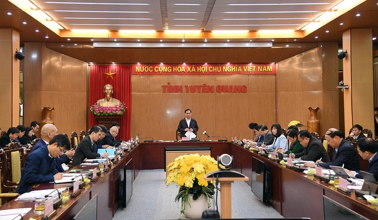
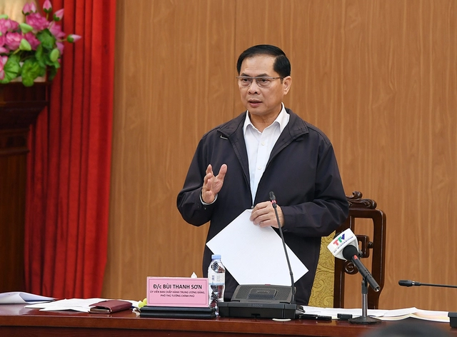

Ngày 8/3, Phó Thủ tướng, Bộ trưởng Bộ Ngoại giao Bùi Thanh Sơn đã chủ trì họp với các tỉnh Tuyên Quang, Hà Giang, Cao Bằng và Lạng Sơn về tiến độ triển khai 4 tuyến cao tốc: Tuyên Quang - Hà Giang đoạn qua tỉnh Hà Giang, Tuyên Quang - Hà Giang đoạn qua tỉnh Tuyên Quang, Đồng Đăng - Trà Lĩnh, Hữu Nghị - Chi Lăng.
Trước đó, Phó Thủ tướng Bùi Thanh Sơn đã đi kiểm tra tiến độ và tặng quà động viên lực lượng thi công Dự án xây dựng cao tốc Tuyên Quang-Hà Giang đoạn qua tỉnh Tuyên Quang tại nút giao Quốc lộ 37.
Theo báo cáo của Bộ Xây dựng, dự án cao tốc Tuyên Quang - Hà Giang đoạn qua tỉnh Tuyên Quang có tổng chiều dài 77 km, tổng mức đầu tư 6.800 tỷ đồng.
Dự án hiện còn khoảng 5,7 km chưa được bàn giao mặt bằng sạch do đất của các hộ gia đình thuộc diện giải toả mặt bằng liên quan đến đất lâm nghiệp; công tác di dời hạ tầng kỹ thuật và tái định cư chậm; còn thiếu khoảng 0,35 triệu m3 đá và 1,97 triệu m3 đất so với nhu cầu; tiến độ triển khai các gói thầu xây lắp còn chậm 7% so với hợp đồng, ảnh hưởng đến khả năng hoàn thành dự án theo yêu cầu.
Tại cuộc họp, lãnh đạo tỉnh Tuyên Quang cam kết với Phó Thủ tướng sẽ hoàn thành giải công tác phóng mặt bằng, vướng mắc về đất đắp hiện còn thiếu 2,1 triệu m3 trong tháng 3; hoàn thành di dời hạ tầng kỹ thuật trước ngày 15/5.
Tỉnh Tuyên Quang kiến nghị Chính phủ xem xét hỗ trợ bổ sung thêm cho tỉnh số vốn 1.800 tỷ đồng từ nguồn ngân sách Trung ương năm 2025 để hoàn thành dự án giai đoạn 1; hỗ trợ bổ sung vốn cho dự án 5.437 tỷ đồng, thực hiện giai đoạn 2 của dự án (giai đoạn hoàn chỉnh).
Dự án cao tốc Tuyên Quang-Hà Giang giai đoạn 1, đoạn qua tỉnh Hà Giang có tổng chiều dài 27,5 km, tổng mức đầu tư 3.198 tỷ đồng. Đến nay, đã hoành thành công tác giải phóng mặt bằng nhưng còn thiếu vật liệu đá trong khi tiến độ triển khai thi công các gói thầu xây lắp chậm 15,7% so với hợp đồng.
Do khó khăn về ngân sách, hai tỉnh Tuyên Quang và Hà Giang đều kiến nghị Chính phủ hỗ trợ ngân sách để hoàn thành giai đoạn 1 của dự án cao tốc Tuyên Quang-Hà Giang.
Dự án cao tốc Đồng Đăng (tỉnh Lạng Sơn) – Trà Lĩnh (tỉnh Cao Bằng) giai đoạn 1 có tổng chiều dài tuyến là 93,35 km, trong đó đoạn qua địa bàn tỉnh Lạng Sơn dài khoảng 52 km, qua địa bàn tỉnh Cao Bằng khoảng 41,35 km, với tổng mức đầu tư 14.114,781 tỷ đồng.
Dự án phải điều chỉnh cục bộ hướng tuyến tại một số vị trí, dẫn đến phải bổ sung phạm vi giải phóng mặt bằng; còn hơn 300 hộ dân chưa di dời… dẫn đến sản lượng thi công mới chỉ đạt khoảng 19% dù khởi công từ đầu năm 2024 đến nay.
Phó Chủ tịch UBND tỉnh Lạng Sơn Lương Trọng Quỳnh cam kết hoàn thành công tác giải phóng mặt bằng trong tháng 3.
Dự án cao tốc Hữu Nghị - Chi Lăng dài 43 km qua địa phận các huyện Cao Lộc, Chi Lăng tỉnh Lạng Sơn, có tổng mức đầu tư 11.029 tỷ đồng. Dự án khởi công từ tháng 4/2024, tuy nhiên đến nay chưa hoàn thành công tác giải phóng mặt bằng, xây dựng khu tái định cư, di dời cải tạo đường điện cao thế.
Tỉnh Cao Bằng cũng cam kết hoàn thành công tác giải phóng mặt bằng trong quý I/2025; quyết tâm phối hợp với các nhà thầu hoàn thành toàn bộ dự án; kiến nghị Trung ương bổ sung nguồn vốn ngân sách Trung ương năm 2025 với số vốn 3.420 tỷ đồng để thực hiện dự án; Bộ Tài chính báo cáo Thủ tướng Chính phủ hỗ trợ cho tỉnh khoảng 2.000 tỷ đồng từ nguồn ngân sách Trung ương để bù cho phần vốn thuộc trách nhiệm của địa phương.
Phát biểu kết luận cuộc họp, Phó Thủ tướng đánh giá cao 4 địa phương, chủ đầu tư, các nhà thầu đã nỗ lực triển khai các dự án giao thông trọng điểm trên địa bàn trong thời gian vừa qua, cũng như cam kết của các địa phương trong việc hoàn tất công tác giải phóng mặt bằng, tháo gỡ vướng mắc khó khăn liên quan đến vật liệu, di dời công trình hạ tầng kỹ thuật ngay trong tháng 3.
Phó Thủ tướng giao Bộ Xây dựng với vai trò là cơ quan thường trực của Tổ công tác, làm đầu mối tiếp tục chủ động bán sát các địa phương để nắm bắt tình hình, kịp thời tổng hợp báo cáo cấp có thẩm quyền giải quyết khó khăn vướng mắc.
UBND các tỉnh chỉ đạo các chủ đầu tư rà soát nguồn vốn của các dự án, nghiên cứu phương án đầu tư trạm dừng nghỉ, bảo đảm hoàn thành đồng bộ khi dự án đưa vào khai thác; hằng tháng báo cáo kết quả triển khai những công việc còn lại; bảo đảm không để xảy ra tham nhũng trong quá trình thi công, bảo đảm chất lượng công trình.
Các bộ ngành, cơ quan và địa phương có liên quan căn cứ chức năng nhiệm vụ quyền hạn giải quyết các nhiệm vụ được giao đúng tiến độ, nếu có khó khăn vướng mắc, kịp thời tổng hợp báo cáo cấp có thẩm quyền giải quyết.
Đối với dự án cao tốc Tuyên Quang-Hà Giang đoạn qua tỉnh Tuyên Quang, Phó Thủ tướng yêu cầu Chủ tịch UBND tỉnh phải tập trung hơn trong lãnh đạo, chỉ đạo công tác giải phóng mặt bằng.
Ngay trong ngày hôm nay, UBND tỉnh Tuyên Quang chỉ đạo Sở Nông nghiệp và Môi trường làm việc với chủ đầu tư, nhà thầu để làm rõ nhu cầu, khối lượng thiếu đề xuất mỏ cấp, giải quyết thủ tục cấp mở trong tối đa 10 ngày.
Với dự án cao tốc Tuyên Quang-Hà Giang đoạn qua tỉnh Hà Giang, Phó Thủ tướng yêu cầu UBND tỉnh Hà Giang chỉ đạo các đơn vị liên quan đẩy nhanh thủ tục cấp phép khai thác khoáng sản cho 4 mỏ đá, hoàn thành trong tháng 3 năm 2025; làm rõ rách nhiệm của từng cơ quan, đơn vị, cá nhân khi tiến độ thi công chậm 15,7% so với hợp đồng.
Về dự án cao tốc Đồng Đăng-Trà Lĩnh, UBND các tỉnh Cao Bằng, Lạng Sơn chỉ đạo các cơ quan, đơn vị đẩy nhanh tiến độ chuyển đổi mục đích sử dụng đất rừng, di dời hạ tầng kỹ thuật, bàn giao mặt bằng sạch cho chủ đầu tư.
Để hoàn thành 89% khối lượng còn lại của dự án trong 10 tháng, nhà thầu cần tập trung tối đa nguồn lực, máy móc, thiết bị, thi công tăng ca, tăng kíp để bù đắp khối lượng chậm và để đạt được mục tiêu hoàn thành thông tuyến trước ngày 31/12/2025.
Đối với dự án cao tốc Hữu Nghị-Chi Lăng, Phó Thủ tướng yêu cầu UBND tỉnh Lạng Sơn chỉ đạo các cơ quan, đơn vị liên quan hoàn thành dứt điểm công tác di dời, cải tạo đường điện cao thế trong tháng 3/2025; đồng thời có phương án tạm cư trong thời gian xây dựng các khu tái định cư để bàn giao toàn bộ mặt bằng cho chủ đầu tư triển khai thi công trong tháng 3/2025 .
Lê Mạnh Quốc, Thứ 7 ngày 8/3/2025
Comments